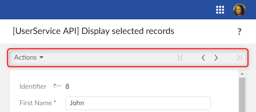
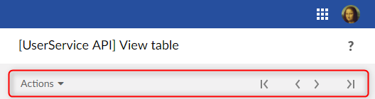

The following table lists, per nature, the interface to implement:
Nature | Interface |
|---|---|
Dataspace | UserService<DataspaceEntitySelection> |
Dataset | UserService<DatasetEntitySelection> |
TableView | UserService<TableViewEntitySelection> |
Record | UserService<RecordEntitySelection> |
Hierarchy | UserService<HierarchyEntitySelection> |
HierarchyNode | UserService<HierarchyNodeEntitySelection> |
Association | UserService<AssociationEntitySelection> |
AssociationRecord | UserService<AssociationRecordEntitySelection> |
The user service implementation class is:
Instantiated at the first HTTP request by a call to its declaration createUserService() method.
Discarded when the current page goes out of scope or when the session times out.
Access to this class is synchronized by TIBCO EBX® to make sure that only one HTTP request is processed at a time. Therefore, the class does not need to be thread-safe.
The user service may have attributes. The state of these attributes will be preserved between HTTP requests. However, developers must be aware that these attributes should have moderate use of resources, such as memory, not to overload the EBX® server.
The object context is a container for objects managed by the user service. This context is initialized and modified by the user service's implementation of the method UserService.setupObjectContext.
An object of the object context is identified by an object key:
ObjectKey customerKey = ObjectKey.forName("customer");
An object can be:
A record,
A dataset,
A new record not yet persisted,
A dynamic object.
The object context is maintained between HTTP requests and usually only needs to be set up upon the first request.
Once persisted, a new record object is automatically changed to a plain record object.
As with adaptations, path expressions are used to reference a sub-element of an object.
In the following sample, a pane writer adds a form input mapped to the attribute of an object:
// Add an input field for customer's last name.
aWriter.setCurrentObject(customerKey);
aWriter.addFormRow(Path.parse("lastName"));
In the following sample, an event callback gets the value of the attribute of an object:
// Get value of customer's last name.
ValueContext customerValueContext = aValueContext.getValueContext(customerKey);
String lastName = customerValueContext.getValue(Path.parse("lastName"));
A dynamic object is an object whose schema is defined by the user service itself. An API is provided to define the schema programmatically. This API allows defining only instance elements (instance nodes). Defining tables is not supported. It supports most other features available with standard EBX® data models, such as types, labels, custom widgets, enumerations and constraints, including programmatic ones.
The following sample defines two objects having the same schema:
public class SampleService implements UserService<TableViewEntitySelection>
{
// Define an object key per object:
private static final ObjectKey _PersonObjectKey = ObjectKey.forName("person");
private static final ObjectKey _PartnerObjectKey = ObjectKey.forName("partner");
// Define a path for each property:
private static final Path _FirstName = Path.parse("firstName");
private static final Path _LastName = Path.parse("lastName");
private static final Path _BirthDate = Path.parse("birthDate");
...
// Define and register objects:
@Override
public void setupObjectContext(
UserServiceSetupObjectContext<DataspaceEntitySelection> aContext,
UserServiceObjectContextBuilder aBuilder)
{
if (aContext.isInitialDisplay())
{
BeanDefinition def = aBuilder.createBeanDefinition();
BeanElement firstName = def.createElement(_FirstName, SchemaTypeName.XS_STRING);
firstName.setLabel("First name");
firstName.setDescription("This is the given name");
firstName.setMinOccurs(1);
BeanElement lastName = def.createElement(_LastName, SchemaTypeName.XS_STRING);
lastName.setLabel("Last name");
lastName.setDescription("This is the familly name");
lastName.setMinOccurs(1);
BeanElement birthDate = def.createElement(_BirthDate, SchemaTypeName.XS_DATE);
birthDate.setLabel("Birth date");
birthDate.addFacetMax(new Date(), false);
aBuilder.registerBean(_PersonObjectKey, def);
aBuilder.registerBean(_PartnerObjectKey, def);
}
...
}
The display is set up by the user service's implementation of the method UserService.setupDisplay.
This method is called at each request and can set the following:
The title (the default is the label specified by the user service declaration),
The contextual help URL,
The breadcrumbs,
The toolbar,
The bottom buttons.
If necessary, the header and the bottom buttons can be hidden.
The display setup is not persisted and, at each HTTP request, is reset to default before calling the method UserService.setupDisplay.
Bottom buttons
Buttons may be of two types: action and submit.
An action button triggers an action event without submitting the form. By default, the user needs to acknowledge that, by leaving the page, the last changes will be lost. This behavior can be customized.
A submit button triggers a submit event that always submits the form.
More information on events can be found in the following sections.
Content callback
This callback usually implements the interface UserServicePane to render a plain EBX® form. The callback can also be an instance of UserServiceTabbedPane to render an EBX® form with tabs.
For specific cases, the callback can implement UserServiceRawPane. This interface has restrictions but is useful when one wants to implement an HTML form that is not managed by EBX®.
Toolbars
Toolbars are optional and come in two flavors.
The form style:

The table view style:

The style is automatically selected: toolbars defined for a record are of the form style and toolbars defined for a table are of the table view style.
Samples
The following sample implements a button that closes the current user service and redirects the user back to the current selection, only if saving the data was successful:
public class SampleService implements UserService<...>
{
private static final ObjectKey _RecordObjectKey = ObjectKey.forName("record");
...
@Override
public void setupDisplay(
UserServiceSetupDisplayContext<RecordEntitySelection> aContext,
UserServiceDisplayConfigurator aConfigurator)
{
...
// Define a "save and close" button with callback onSave().
aConfigurator.setLeftButtons(aConfigurator.newSaveCloseButton(this::onSave));
}
private UserServiceEventOutcome onSave(UserServiceEventContext anEventContext)
{
ProcedureResult result = anEventContext.save(_RecordObjectKey);
if (result.hasFailed())
{
// Save has failed. Redisplay the user message.
return null;
}
// Save has succeded.Close the service.
return UserServiceNext.nextClose();
}
}
The following sample is compatible with the Java 6 syntax. Only differences with the previous code are shown:
public class SampleService implements UserService<...>
{
...
@Override
public void setupDisplay(
UserServiceSetupDisplayContext<RecordEntitySelection> aContext,
UserServiceDisplayConfigurator aConfigurator)
{
...
// Define a "save and close" button with callback onSave().
aConfigurator.setLeftButtons(aConfigurator.newSaveCloseButton(new UserServiceEvent() {
@Override
public UserServiceEventOutcome processEvent(UserServiceEventContext anEventContext)
{
return onSave(anEventContext);
}
}));
}
}
The following sample implements a URL that closes the service and redirects the current user to another user service:
public class SampleService implements UserService<...>
{
...
private void writePane(UserServicePaneContext aPaneContext, UserServicePaneWriter aWriter)
{
// Displays an ULR that redirect current user.
String url = aWriter.getURLForAction(this::goElsewhere);
aWriter.add("<a ");
aWriter.addSafeAttribute("href", url);
aWriter.add(">Go elsewhere</a");
}
private UserServiceEventOutcome goElsewhere(UserServiceEventContext anEventContext)
{
// Redirects current user to another user service.
ServiceKey serviceKey = ServiceKey.forModuleServiceName("CustomerModule", "CustomService");
return UserServiceNext.nextService(serviceKey);
}
}
The following code is an implementation of the method UserService.processEventOutcome, sufficient for simple user services:
public class HelloWordService implements UserService<...>
{
@Override
public UserServiceEventOutcome processEventOutcome(
UserServiceProcessEventOutcomeContext<DatasetEntitySelection> aContext,
UserServiceEventOutcome anEventOutcome)
{
// By default do not modify the outcome.
return anEventOutcome;
}
}
The following sample is a more complex "wizard" service that includes three steps, each having its own UserService.setupDisplay method:
// Custom outcome values.
public enum CustomOutcome implements UserServiceEventOutcome {
displayStep1, displayStep2, displayStep3
};
// All steps of the wizard service implement this interface.
public interface WizardStep
{
public void setupDisplay(
UserServiceSetupDisplayContext<DataspaceEntitySelection> aContext,
UserServiceDisplayConfigurator aConfigurator);
}
// The user service implementation.
public class WizardService implements UserService<...>
{
// Attribute for current step.
private WizardStep step = new WizardStep1();
...
@Override
public void setupDisplay(
UserServiceSetupDisplayContext<DataspaceEntitySelection> aContext,
UserServiceDisplayConfigurator aConfigurator)
{
...
// Display current step.
this.step.setupDisplay(aContext, aConfigurator);
}
@Override
public UserServiceEventOutcome processEventOutcome(
UserServiceProcessEventOutcomeContext<DataspaceEntitySelection> aContext,
UserServiceEventOutcome anEventOutcome)
{
// Custom outcome value processing.
if (anEventOutcome instanceof CustomOutcome)
{
CustomOutcome action = (CustomOutcome) anEventOutcome;
switch (action)
{
case displayStep1:
this.step = new WizardStep1();
break;
case displayStep2:
this.step = new WizardStep2();
break;
case displayStep3:
this.step = new WizardStep3();
break;
}
// Redisplay the user service.
return null;
}
// Let EBX® process the event outcome.
return anEventOutcome;
}
}
An event callback may update the database.
The following sample saves two objects using a single transaction:
public class MultipleObjectsSampleService implements UserService<...>
{
// This service defines a two objects having same schema.
private static final ObjectKey _Person1_ObjectKey = ObjectKey.forName("person1");
private static final ObjectKey _Person2_ObjectKey = ObjectKey.forName("person2");
...
// Save button callback.
private UserServiceEventOutcome onSave(UserServiceEventContext aContext)
{
ProcedureResult result = aContext.save(_Person1_ObjectKey, _Person2_ObjectKey);
if (result.hasFailed())
{
//Save failed. Redisplay the service.
//The user interface will automatically report error messages.
return null;
}
// Save succeeded. Close the service.
return UserServiceNext.nextClose();
}
}
The following sample updates the database using a procedure:
import com.orchestranetworks.service.*;
import com.orchestranetworks.userservice.*;
public class MultipleObjectsSampleService implements UserService<...>
{
...
// Event callback.
private UserServiceEventOutcome onUpdateSomething(UserServiceEventContext aContext)
{
Procedure procedure = new Procedure()
{
public void execute(ProcedureContext aContext) throws Exception
{
// Code that updates database should be here.
...
}
};
UserServiceTransaction transaction = aContext.createTransaction();
transaction.add(procedure);
ProcedureResult result = transaction.execute();
if (result.hasFailed())
{
aContext.addError("Procedure failed");
}
else
{
aContext.addInfo("Procedure succeeded");
}
return null;
}
A user service can implement Ajax callbacks. An Ajax callback must implement the interface UserServiceAjaxRequest.
The client calls an Ajax callback using the URL generated by: UserServiceResourceLocator.getURLForAjaxRequest.
To facilitate the use of Ajax components, EBX® provides the JavaScript prototype EBX_AJAXResponseHandler for sending the request and handling the response. For more information on EBX_AJAXResponseHandler see UserServiceAjaxRequest.
The following sample implements an Ajax callback that returns partial HTML:
public class AjaxSampleService implements UserService<DataspaceEntitySelection>
{
...
@Override
public void setupDisplay(
UserServiceSetupDisplayContext<DataspaceEntitySelection> aContext,
UserServiceDisplayConfigurator aConfigurator)
{
aConfigurator.setLeftButtons(aConfigurator.newCloseButton());
aConfigurator.setContent(this::writePane);
}
/**
* Displays an URL that will execute the callback
* and display the returned partial HTML inside a <div> tag.
*/
private void writePane(UserServicePaneContext aPaneContext, UserServicePaneWriter aWriter)
{
// Generate the URL of the Ajax callback.
String url = aWriter.getURLForAjaxRequest(this::ajaxCallback);
// The id of the <div> that will display the partial HTML returned by the Ajax callback.
String divId = "sampleId";
aWriter.add("<div ");
aWriter.addSafeAttribute("class", UICSSClasses.CONTAINER_WITH_TEXT_PADDING);
aWriter.add(">");
// Display the URL that will execute the callback.
aWriter.add("<a ");
aWriter.addSafeAttribute("href", "javascript:sample_sendAjaxRequest('" + url + "', '"
+ divId + "')");
aWriter.add(">");
aWriter.add("Click to call a user service Ajax callback");
aWriter.add("</a>");
// Output the <div> tag that will display the partial HTML returned by the callback.
aWriter.add("<div ");
aWriter.addSafeAttribute("id", divId);
aWriter.add("></div>");
aWriter.add("</div>");
// JavaScript method that will send the Java request.
aWriter.addJS_cr();
aWriter.addJS_cr("function sample_sendAjaxRequest(url, targetDivId) {");
aWriter.addJS_cr(" var ajaxHandler = new EBX_AJAXResponseHandler();");
aWriter.addJS_cr(" ajaxHandler.handleAjaxResponseSuccess = function(responseContent) {");
aWriter.addJS_cr(" var element = document.getElementById(targetDivId);");
aWriter.addJS_cr(" element.innerHTML = responseContent;");
aWriter.addJS_cr(" };");
aWriter.addJS_cr(" ajaxHandler.handleAjaxResponseFailed = function(responseContent) {");
aWriter.addJS_cr(" var element = document.getElementById(targetDivId);");
aWriter.addJS_cr(" element.innerHTML = \"<span class='" + UICSSClasses.TEXT.ERROR
+ "'>Ajax call failed</span>\";");
aWriter.addJS_cr(" }");
aWriter.addJS_cr(" ajaxHandler.sendRequest(url);");
aWriter.addJS_cr("}");
}
/**
* The Ajax callback that returns partial HTML.
*/
private void ajaxCallback(
UserServiceAjaxContext anAjaxContext,
UserServiceAjaxResponse anAjaxResponse)
{
UserServiceWriter writer = anAjaxResponse.getWriter();
writer.add("<p style=\"color:green\">Ajax callback succeeded!</p>");
writer.add("<p>Current data and time is: ");
DateFormat format = DateFormat.getDateTimeInstance(
DateFormat.FULL,
DateFormat.FULL,
Locale.US);
writer.addSafeInnerHTML(format.format(new Date()));
writer.add("</p>");
}
}
A user service can access REST data services through HTTP requests.
The client should use the URL generated by: UIResourceLocator.getURLForRest. This URL includes required information for the user authentication.
For more information on REST data services see the Built-in RESTful services.
The following sample implements a REST data service call whose response is printed in a textarea:
public class RestCallSampleService implements UserService<DataspaceEntitySelection>
{
...
@Override
public void setupDisplay(
UserServiceSetupDisplayContext<DataspaceEntitySelection> aContext,
UserServiceDisplayConfigurator aConfigurator)
{
aConfigurator.setLeftButtons(aConfigurator.newCloseButton());
aConfigurator.setContent(this::writePane);
}
private void writePane(UserServicePaneContext aPaneContext, UserServicePaneWriter aWriter)
{
// Generates the URL for REST data service call without additional parameters
final String url = aWriter.getURLForRest("/ebx-dataservices/rest/{specificPath}", null);
final String resultAreaId = "restResult";
// Displays a link for REST data service call
aWriter.add("<div ");
aWriter.addSafeAttribute("class", UICSSClasses.CONTAINER_WITH_TEXT_PADDING);
aWriter.add(">");
aWriter.add("<p>This link will display the response after making a REST call</p>");
aWriter.add("<a ");
aWriter.addSafeAttribute("href",
"javascript:sendRestRequest('" + url + "', '" + resultAreaId + "')");
aWriter.add(">");
aWriter.add("Make the call.");
aWriter.add("</a>");
aWriter.add("<textarea ");
aWriter.addSafeAttribute("id", resultAreaId);
aWriter.add(" readonly=\"readonly\" style=\"width: 100%;\" ></textarea>");
aWriter.add("</div>");
// JavaScript method that will send the HTTP REST request
aWriter.addJS_cr("function sendRestRequest(url, targetId) {");
aWriter.addJS_cr(" var xhttp = new XMLHttpRequest();");
aWriter.addJS_cr(" xhttp.open('GET', url, true);");
aWriter.addJS_cr(" xhttp.setRequestHeader('Content-type', 'application/json');");
aWriter.addJS_cr(" xhttp.send();");
aWriter.addJS_cr(" var element = document.getElementById(targetId);");
aWriter.addJS_cr(" xhttp.onreadystatechange = function() {");
aWriter.addJS_cr(" if (xhttp.readyState == 4)");
aWriter.addJS_cr(" element.innerHTML = xhttp.responseText;");
aWriter.addJS_cr(" }");
aWriter.addJS_cr("}");
}
}
A user service can display forms with file input fields.
The following sample displays a form with two input fields, a title and a file:
public class FileUploadService implements UserService<...>
{
// This service defines a single object named "file".
private static final ObjectKey _File_ObjectKey = ObjectKey.forName("file");
// Paths for the "file" object.
public static final Path _Title = Path.parse("title");
public static final Path _File = Path.parse("file");
...
@Override
public void setupObjectContext(
UserServiceSetupObjectContext<DataspaceEntitySelection> aContext,
UserServiceObjectContextBuilder aBuilder)
{
if (aContext.isInitialDisplay())
{
// Create a definition for the "model" object.
BeanDefinition def = aBuilder.createBeanDefinition();
aBuilder.registerBean(_File_ObjectKey, def);
BeanElement element;
element = def.createElement(_Title, SchemaTypeName.XS_STRING);
element.setLabel("Title");
element.setMinOccurs(1);
// Type for a file must be BeanDefinition.OSD_FILE_UPLOAD.
element = def.createElement(_File, BeanDefinition.OSD_FILE_UPLOAD);
element.setLabel("File");
element.setMinOccurs(1);
}
}
@Override
public void setupDisplay(
UserServiceSetupDisplayContext<DataspaceEntitySelection> aContext,
UserServiceDisplayConfigurator aConfigurator)
{
aConfigurator.setTitle("File upload service");
aConfigurator.setLeftButtons(aConfigurator.newSubmitButton("Upload", this::onUpload), aConfigurator.newCancelButton());
// IMPORTANT: Following method must be called to enable file upload.
// This will set form encryption type to "multipart/form-data".
aConfigurator.setFileUploadEnabled(true);
aConfigurator.setContent(this::writePane);
}
private void writePane(UserServicePaneContext aContext, UserServicePaneWriter aWriter)
{
final UIWidgetFileUploadFactory fileUploadFactory = new UIWidgetFileUploadFactory();
aWriter.setCurrentObject(_File_ObjectKey);
aWriter.startTableFormRow();
// Title input.
aWriter.addFormRow(_Title);
// File upload input.
UIWidgetFileUpload widget = aWriter.newCustomWidget(_File, fileUploadFactory);
// Default filter for file names.
widget.setAccept(".txt");
aWriter.addFormRow(widget);
aWriter.endTableFormRow();
}
private UserServiceEventOutcome onUpload(UserServiceEventContext anEventContext)
{
ValueContextForInputValidation valueContext = anEventContext.getValueContext(_File_ObjectKey);
String title = (String) valueContext.getValue(_Title);
UploadedFile file = (UploadedFile) valueContext.getValue(_File);
InputStream in;
try
{
in = file.getInputStream();
}
catch (IOException e)
{
// Should not happen.
anEventContext.addError("Cannot read file.");
return null;
}
// Do something with title and the input stream.
return UserServiceNext.nextClose();
}
}
For more information, see UIWidgetFileUpload.
A user service can display URLs or buttons to download files. The actual downloading of a file is under the control of the user service.
The following sample displays a URL to download a file:
public class FileDownloadService implements UserService<DataspaceEntitySelection>
{
...
@Override
public void setupDisplay(
UserServiceSetupDisplayContext<DataspaceEntitySelection> aContext,
UserServiceDisplayConfigurator aConfigurator)
{
aConfigurator.setLeftButtons(aConfigurator.newCloseButton());
aConfigurator.setContent(this::writePane);
}
private void writePane(UserServicePaneContext aContext, UserServicePaneWriter aWriter)
{
aWriter.add("<div ");
aWriter.addSafeAttribute("class", UICSSClasses.CONTAINER_WITH_TEXT_PADDING);
aWriter.add(">");
// Generate and display the URL for the download.
String downloadURL = aWriter.getURLForGetRequest(this::processDownloadRequest);
aWriter.add("<a ");
aWriter.addSafeAttribute("href", downloadURL);
aWriter.add(">Click here to download a sample file</a>");
aWriter.add("</div>");
}
private void processDownloadRequest(
UserServiceGetContext aContext,
UserServiceGetResponse aResponse)
{
// The file is plain text.
aResponse.setContentType("text/plain;charset=UTF-8");
// Remove the following statement to display the file directly in the browser.
aResponse.setHeader("Content-Disposition", "attachment; filename=\"sample.txt\"");
// Write a text file using UTF-8 encoding.
PrintWriter out;
try
{
out = new PrintWriter(new OutputStreamWriter(aResponse.getOutputStream(), "UTF-8"));
}
catch (IOException ex)
{
throw new RuntimeException(ex);
}
DateFormat format = DateFormat.getDateTimeInstance(
DateFormat.FULL,
DateFormat.MEDIUM,
Locale.US);
Date now = new Date();
out.println("Hello !");
out.println("This is a sample text file downloaded on " + format.format(now)
+ ", from EBX®.");
out.close();
}
}
A user service may be designed to execute a task without display and return to the previous screen or redirect the user to another screen.
This type of service must implement the interface UserServiceExtended and method UserServiceExtended.initialize.
The following sample deletes selected records in the current table view:
public class DeleteRecordsService implements UserServiceExtended<TableViewEntitySelection>
{
...
@Override
public UserServiceEventOutcome initialize(
UserServiceInitializeContext<TableViewEntitySelection> aContext)
{
final List<AdaptationName> records = new ArrayList<>();
// Deletes all selected rows in a single transaction.
RequestResult requestResult = aContext.getEntitySelection().getSelectedRecords().execute();
try
{
for (Adaptation record = requestResult.nextAdaptation(); record != null; record = requestResult.nextAdaptation())
{
records.add(record.getAdaptationName());
}
}
finally
{
requestResult.close();
}
Procedure deleteProcedure = new Procedure()
{
@Override
public void execute(ProcedureContext aContext) throws Exception
{
for (AdaptationName record : records)
{
aContext.doDelete(record, false);
}
}
};
UserServiceTransaction transaction = aContext.createTransaction();
transaction.add(deleteProcedure);
// Adds an information messages for current user.
ProcedureResult procedureResult = transaction.execute(true);
if (!procedureResult.hasFailed())
{
if (records.size() <= 1)
{
aContext.addInfo(records.size() + " record was deleted.");
}
else
{
aContext.addInfo(records.size() + " records were deleted.");
}
}
// Do not display the user service and return to current view.
return UserServiceNext.nextClose();
}
@Override
public void setupObjectContext(
UserServiceSetupObjectContext<TableViewEntitySelection> aContext,
UserServiceObjectContextBuilder aBuilder)
{
//Do nothing.
}
@Override
public void setupDisplay(
UserServiceSetupDisplayContext<TableViewEntitySelection> aContext,
UserServiceDisplayConfigurator aConfigurator)
{
//Do nothing.
}
@Override
public void validate(UserServiceValidateContext<TableViewEntitySelection> aContext)
{
//Do nothing.
}
@Override
public UserServiceEventOutcome processEventOutcome(
UserServiceProcessEventOutcomeContext<TableViewEntitySelection> aContext,
UserServiceEventOutcome anEventOutcome)
{
return anEventOutcome;
}
}
If such service is called in the context of a Web component, an association, a perspective action or a hierarchy node, The service will be launched, initialized and closed, but the service's target entity will still be displayed.